Taylor Polynomials¶
So far we have calculated sine and cosine values with Python.
>>> import math
>>> math.sin(1)
0.8414709848078965
In this chapter we'll learn how these functions work, and we'll also write our own sin and cos implementations that would be good enough for pretty much everything.
This tutorial uses radians, unit circle trig and derivatives. Be sure to learn these things first.
WTF are Taylor polynomials?¶
Here are a few graphs:
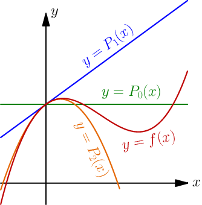
The red graph is a complicated curve that the other graphs are trying to approximate.
Let's make some notes based on the graphs:
- All graphs have the same height at 0, so .
 and 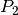 go to the same direction as
and 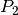 go to the same direction as  at 0, so
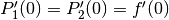.
at 0, so
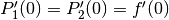.- This one isn't as obvious as other stuff above, but anyway, 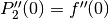.
Here 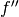 means the derivative of the derivative.
Let's find the equations of 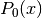, 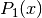 and 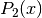. The 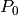 is easy:
It's also easy to get started with .
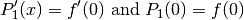
If you know integrals you can calculate this yourself. Just
note that  is a constant because it doesn't depend on the value of
is a constant because it doesn't depend on the value of  .
Anyway, the only that satisfies these things is here:
.
Anyway, the only that satisfies these things is here:
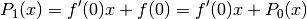
Here I used the fact that . You'll see why later.
Let's find and yet another polynomial 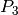 similarly:
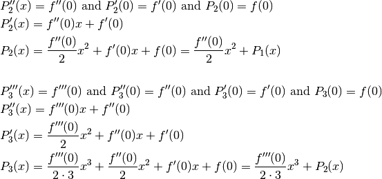
So, here are all the results we have gotten so far, written in a way that makes the pattern quite obvious.
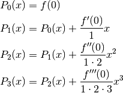
Next we'll write the rule for calculating  for any
for any  , but we need more
notation:
, but we need more
notation:
 is the 'th derivative of , e.g.
is the 'th derivative of , e.g.  .
.- 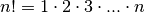. Most programming languages have a
factorial(n)function that returns .
.
Let's do this.
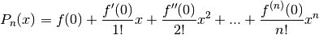
This is known as the 'th Taylor polynomial.
We used  here as a "magic number" that we always put to 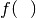, but
that doesn't need to be 0. Here's a more generalized Taylor polynomial:
here as a "magic number" that we always put to 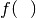, but
that doesn't need to be 0. Here's a more generalized Taylor polynomial:
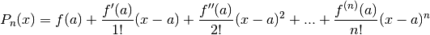
The Taylor polynomial with  is also known as a Maclaurin polynomial. You
don't need to remember that in this tutorial, but if someone talks about a
Maclaurin polynomial they mean this.
is also known as a Maclaurin polynomial. You
don't need to remember that in this tutorial, but if someone talks about a
Maclaurin polynomial they mean this.
Taylor polynomials are usually accurate near  and less accurate far from
. These graphs demonstrate that:
and less accurate far from
. These graphs demonstrate that:
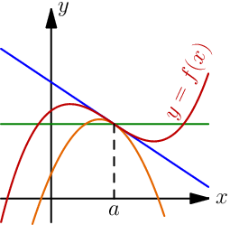
The Magic Sine¶
This is the real thing. We'll write our own sin(x) function.
We need to know that 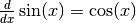 and 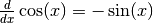. These rules are proved here.
So, we get this:
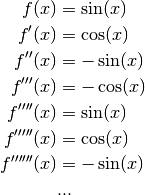
The pattern is obvious.
Now let's plug in some values. With the unit
circle we know that 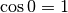 and
because the  point
point  corresponds to the angle 0.
corresponds to the angle 0.
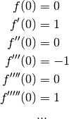
So we have this:
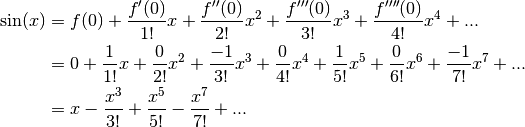
That looks quite nice, so let's draw a graph and see if it actually works.
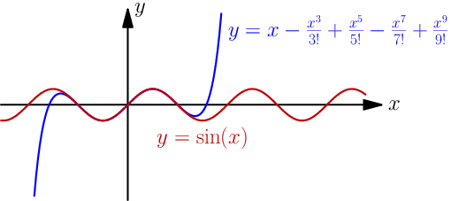
I think this is just awesome.
Here's our 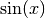 implementation:
# python has math.factorial, but this is here just to show that there's
# no magic involved
def factorial(n):
result = 1
for i in range(1, n+1): # 1, 2, ..., n
result = result * i
return result
def taylorsin(x):
result = x
for i in range(3, 20, 2): # 3, 5, 7, ..., 19
thingy = x**i/factorial(i)
if i % 4 == 3: # 3, 7, 11, ...
result -= thingy
else:
result += thingy
return result
print(taylorsin(1)) # 0.8414709848078965
import math
print(math.sin(1)) # also 0.8414709848078965
I think this is amazing, and the most amazing thing about this is that we got everything out of basically nothing with just derivatives and antiderivatives.
If you look at how Python's math.sin() is implemented it just calls C
sin(), and that uses taylor polynomials just like our code. The C code is
more complicated than our taylorsin() because it uses taylor polynomials at
other places than , but the basic idea is the same.
If we could somehow continue this forever instead of stopping at e.g. i=99
we would get perfectly precise sin values. I'm not going to talk about the
details of why that happens, but this works for sin, cos and many other things.
An infinitely continuing Taylor polynomial is also known as a Taylor series.
Exercise
Find the Taylor series of 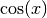 and  . See this
thing if you don't know what
. See this
thing if you don't know what  is or what the
derivative of is. Check your answers with your favorite programming
language and the Taylor series section
on the summary page.
is or what the
derivative of is. Check your answers with your favorite programming
language and the Taylor series section
on the summary page.